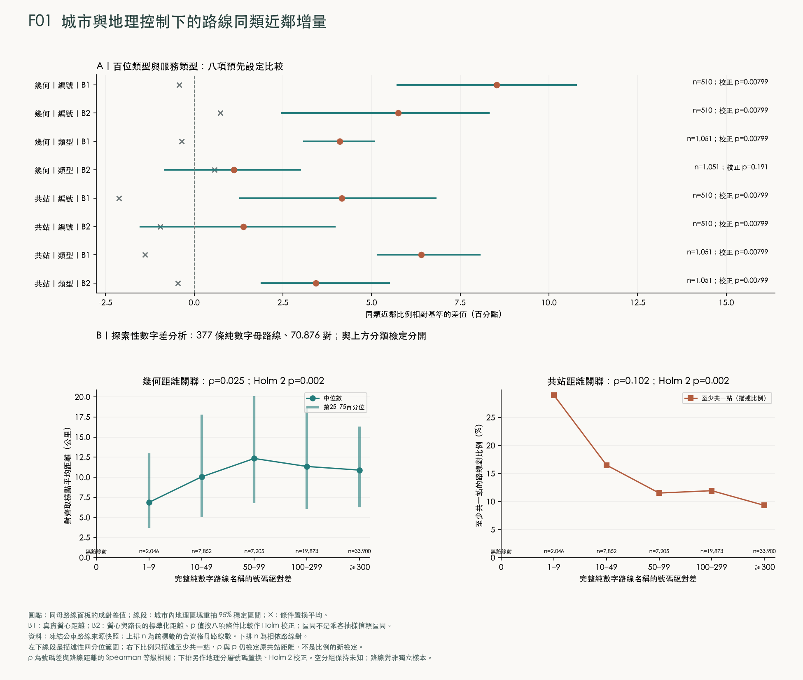
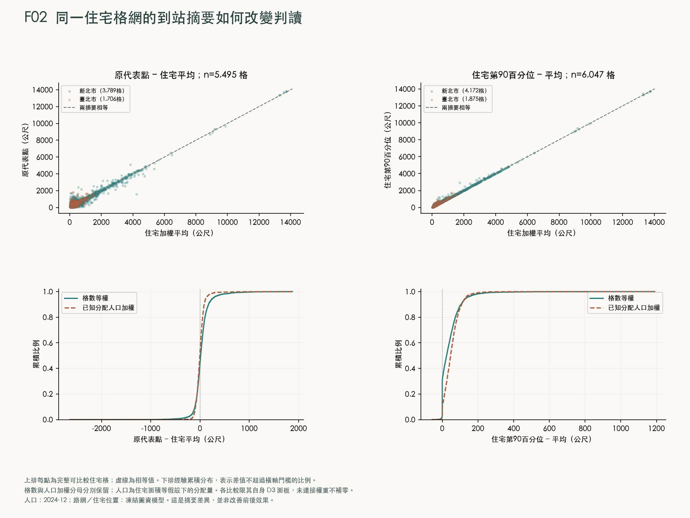
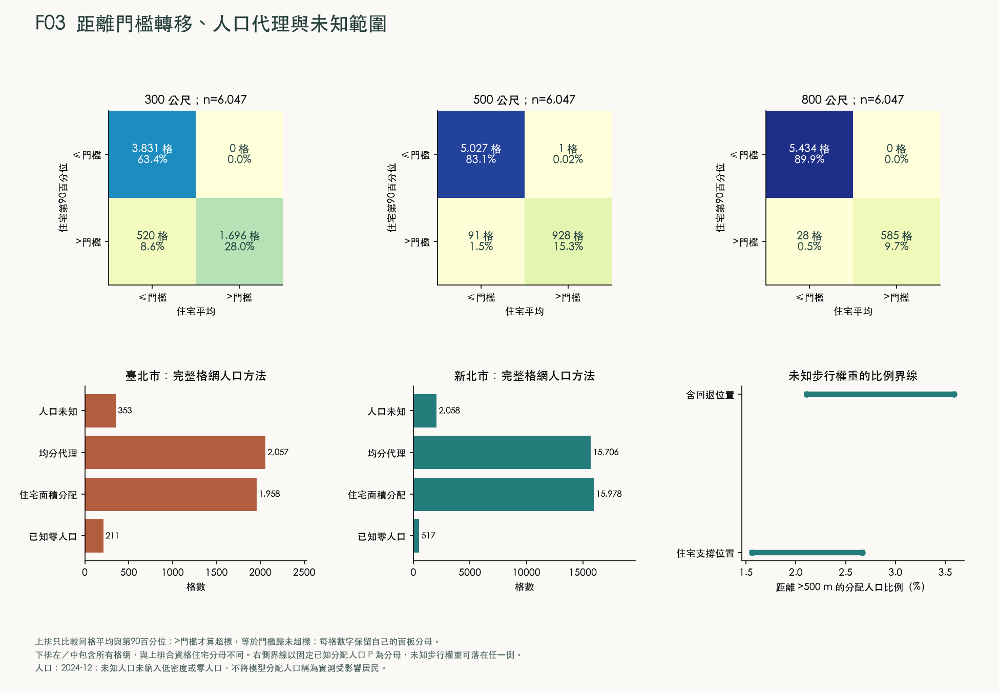
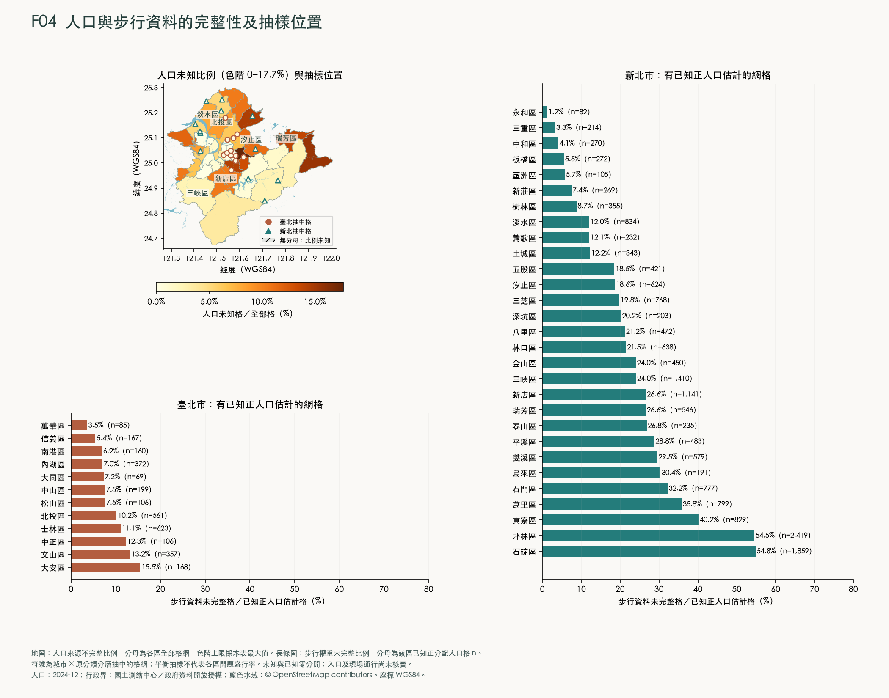
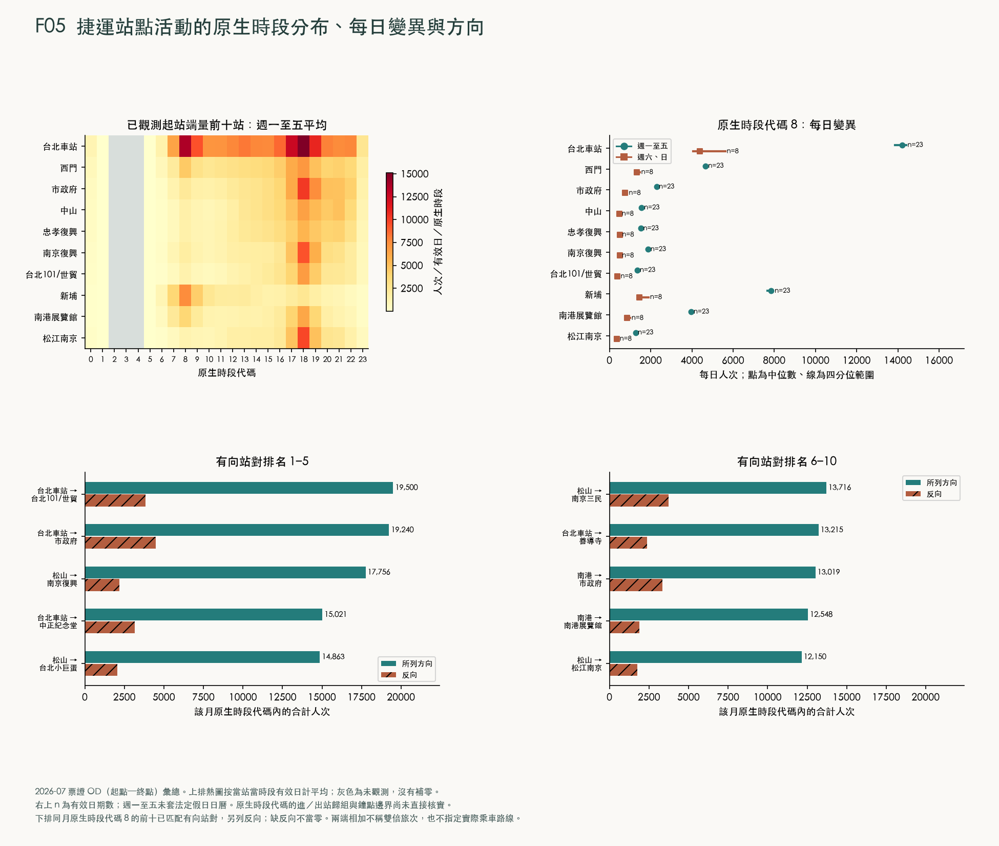
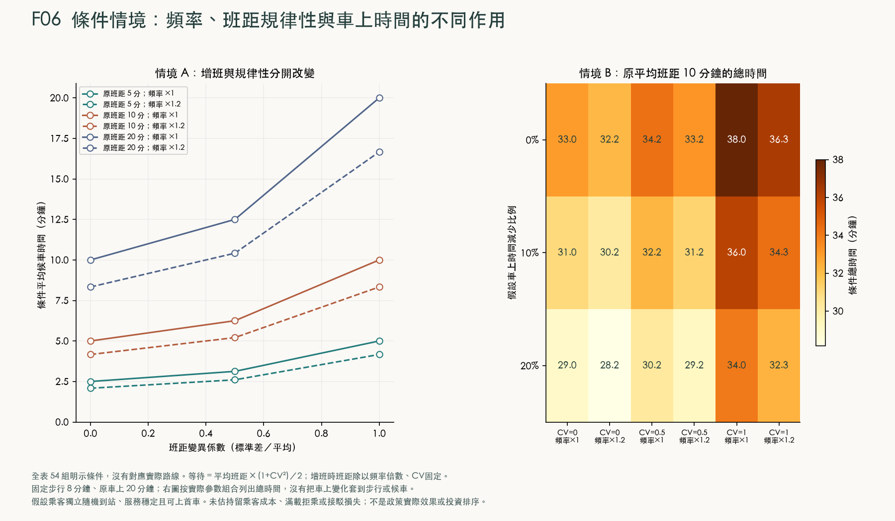

RESULTS ATLAS / 雙北 41 區
從結果回到現場
哪些地方直線看似接近站牌，沿道路卻需要繞行？先查一格，再把路線、人口與捷運的證據放在一起讀。
封存分析版本 b7c2a07d6d6e98a7b68f · 原始分析資料與程式不隨本頁發布。
FIELD REGISTER / 候選清冊
直線 p90 在 500 公尺內，路網 p90 卻超過門檻
這 509 格占 6,047 格合資格配對的 8.42%。其中 371 格使用住宅面積分配，138 格使用面積均分代理。p90 是位置權重累積達 90% 時的距離，不是已觀測的「九成居民步行距離」。
先核對住宅出入口、合法過街與通行路徑，再判斷是否需要增站或調整服務。清冊未納入班次、完整旅程或實際客流，距離差不能直接排成投資優先次序。
代表點所在里與網格相交里只提供位置線索，不表示整里都存在服務缺口；人口是網格配置估計，並非官方里人口。此處是待實地核對的候選清冊。
人口 2024-12；里界 2026-08-17；凍結路網截面
下載完整 509 格 CSV · 下載各區格數 CSV · 閱讀距離與人口方法
正在讀取清冊；也可直接下載上方完整 CSV。
各區候選格數與比較分母（41 區）
| 行政區 | 候選格數 | 合資格格數 | 住宅面積／均分代理 |
|---|---|---|---|
| 新北市 淡水區 | 66 | 423 | 57 / 9 |
| 新北市 汐止區 | 46 | 273 | 35 / 11 |
| 臺北市 士林區 | 44 | 343 | 39 / 5 |
| 新北市 新店區 | 38 | 401 | 26 / 12 |
| 新北市 樹林區 | 38 | 256 | 30 / 8 |
| 臺北市 文山區 | 27 | 198 | 11 / 16 |
| 新北市 三峽區 | 26 | 368 | 23 / 3 |
| 新北市 平溪區 | 25 | 94 | 19 / 6 |
| 新北市 土城區 | 20 | 175 | 13 / 7 |
| 臺北市 北投區 | 20 | 269 | 13 / 7 |
| 新北市 三芝區 | 19 | 79 | 10 / 9 |
| 臺北市 內湖區 | 18 | 229 | 12 / 6 |
| 新北市 林口區 | 14 | 169 | 7 / 7 |
| 新北市 石碇區 | 13 | 40 | 8 / 5 |
| 新北市 鶯歌區 | 11 | 149 | 7 / 4 |
| 新北市 深坑區 | 10 | 40 | 8 / 2 |
| 新北市 萬里區 | 10 | 42 | 5 / 5 |
| 新北市 雙溪區 | 10 | 124 | 9 / 1 |
| 新北市 貢寮區 | 7 | 65 | 6 / 1 |
| 新北市 五股區 | 6 | 144 | 5 / 1 |
| 新北市 中和區 | 5 | 200 | 0 / 5 |
| 新北市 八里區 | 5 | 73 | 3 / 2 |
| 新北市 烏來區 | 5 | 44 | 5 / 0 |
| 新北市 瑞芳區 | 5 | 76 | 3 / 2 |
| 新北市 金山區 | 5 | 47 | 5 / 0 |
| 臺北市 南港區 | 4 | 119 | 4 / 0 |
| 新北市 三重區 | 2 | 192 | 2 / 0 |
| 新北市 新莊區 | 2 | 216 | 0 / 2 |
| 新北市 板橋區 | 2 | 238 | 2 / 0 |
| 臺北市 中山區 | 2 | 145 | 2 / 0 |
| 臺北市 中正區 | 2 | 91 | 1 / 1 |
| 新北市 坪林區 | 1 | 24 | 1 / 0 |
| 臺北市 信義區 | 1 | 123 | 0 / 1 |
| 新北市 永和區 | 0 | 80 | 0 / 0 |
| 新北市 泰山區 | 0 | 55 | 0 / 0 |
| 新北市 石門區 | 0 | 9 | 0 / 0 |
| 新北市 蘆洲區 | 0 | 76 | 0 / 0 |
| 臺北市 大同區 | 0 | 63 | 0 / 0 |
| 臺北市 大安區 | 0 | 132 | 0 / 0 |
| 臺北市 松山區 | 0 | 84 | 0 / 0 |
| 臺北市 萬華區 | 0 | 79 | 0 / 0 |
F01 / 研究結果
城市與地理控制下的路線同類近鄰增量
凍結公車路線來源快照；不是營運時段觀測

B1：真實質心距離；B2：質心與路長的標準化距離。p 值按八項條件比較作 Holm 校正；區間不是乘客抽樣信賴區間。
資料：凍結公車路線來源快照；上排 n 為該標籤的合資格母路線數。下排 n 為相依路線對。
左下線段是描述性四分位範圍；右下比例只描述至少共一站，ρ 與 p 仍檢定原共站距離，不是比例的新檢定。
ρ 為號碼差與路線距離的 Spearman 等級相關；下排另作地理分層號碼置換、Holm 2 校正。空分組保持未知；路線對非獨立樣本。
查看、搜尋與下載 F01 結果表
同類近鄰的控制比較 CSV · 逐條母路線的比較分數 CSV · 號碼差與路線距離 CSV · 號碼差與共站比例 CSV · 純數字號碼的探索檢定 CSV
F02 / 研究結果
同一住宅格網的到站摘要如何改變判讀
人口 2024-12；步行條件為凍結路網截面

格數與人口加權分母分別保留；人口為住宅面積等假設下的分配量。各比較限其自身 D3 面板，未連接權重不補零。
人口：2024-12；路網／住宅位置：凍結圖資模型。這是摘要差異，並非改善前後效果。
查看、搜尋與下載 F02 結果表
F03 / 研究結果
距離門檻轉移、人口代理與未知範圍
人口 2024-12；步行條件為凍結路網截面

下排左／中包含所有格網，與上排合資格住宅分母不同。右側界線以固定已知分配人口 P 為分母，未知步行權重可落在任一側。
人口：2024-12；未知人口未納入低密度或零人口，不將模型分配人口稱為實測受影響居民。
查看、搜尋與下載 F03 結果表
F04 / 研究結果
人口與步行資料的完整性及抽樣位置
人口 2024-12；里界 2026-08-17

符號為城市 × 原分類分層抽中的格網；平衡抽樣不代表各區問題盛行率。未知與已知零分開；入口及現場通行尚未核實。
人口：2024-12；行政界：國土測繪中心／政府資料開放授權；藍色水域：© OpenStreetMap contributors。座標 WGS84。
查看、搜尋與下載 F04 結果表
F05 / 研究結果
捷運站點活動的原生時段分布、每日變異與方向
捷運 OD 2026-07；原生時段代碼的邊界及歸組語義未完整核實

右上 n 為有效日期數；週一至五未套法定假日日曆。原生時段代碼的進／出站歸組與鐘點邊界尚未直接核實。
下排同月原生時段代碼 8 的前十已匹配有向站對，另列反向；缺反向不當零。兩端相加不稱雙倍旅次，也不指定實際乘車路線。
查看、搜尋與下載 F05 結果表
F06 / 研究結果
條件情境：頻率、班距規律性與車上時間的不同作用
假設參數組合，無實測營運期間

固定步行 8 分鐘、原車上 20 分鐘；右圖按實際參數組合列出總時間，沒有把車上變化套到步行或候車。
假設乘客獨立隨機到站、服務穩定且可上首車。未估持留乘客成本、滿載拒乘或接駁損失；不是政策實際效果或投資排序。